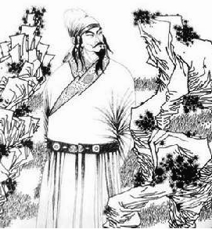

宋词简介| 辛弃疾 词选 | 李清照 词选 | 温庭筠 词选

------菩萨蛮·小山重叠金明灭| 望江南·梳洗罢| 梦江南 千万恨------
小山重叠金明灭，鬓云欲度香腮雪。 懒起画蛾眉，弄妆梳洗迟。
照花前后镜，花面交相映。新帖绣罗襦，双双金鹧鸪。
赏析：此词写女子起床梳洗时的娇慵姿态，以及妆成后的情态，
暗示了人物孤独寂寞的心境。全词把妇女的容貌写得很美丽，服饰写得很华贵，
体态也写得十分娇柔，仿佛描绘了一幅唐代仕女图。词中委婉含蓄地揭示了人物的内
心世界，并成功地运用反衬手法。鹧鸪双双，反衬人物的孤独；容貌服饰的描写
，反衬人物内心的寂寞空虚。作品充分体现了作者的词风和艺术成就。
梳洗罢，独倚望江楼。
过尽千帆皆不是，斜晖脉脉水悠悠。肠断白蘋洲。
赏析：这是一首写闺怨的小令。此词以江水、远帆、斜阳为背景，
截取倚楼顒望这一场景，以空灵疏荡之笔塑造了一个望夫盼归、凝愁含恨的思妇形象。
全词表现了女主人公从希望到失望以致最后的“肠断”的感情，情真意切，语言精练含
蓄而余意不尽，没有矫饰之态和违心之语，风格清丽自然，是温词中别具一格的精品。
千万恨，恨极在天涯。
山月不知心里事，水风空落眼前花。
摇曳碧云斜。
赏析：此词通过描写思妇在孤单的月光下独自思念的情景，
表现了其内心的悲戚和哀伤。通篇写恨，实际是以恨之切，衬爱之深，
思之极。前二句纯用白描，并运用民歌的顶真格式，词句明快流畅；
后三句触物生情，借物抒怀，以无情衬有情，词句流利宛转。全词以
意境取胜，首尾一贯，率直而深婉，余味无穷。
©淘气汉子Urchins